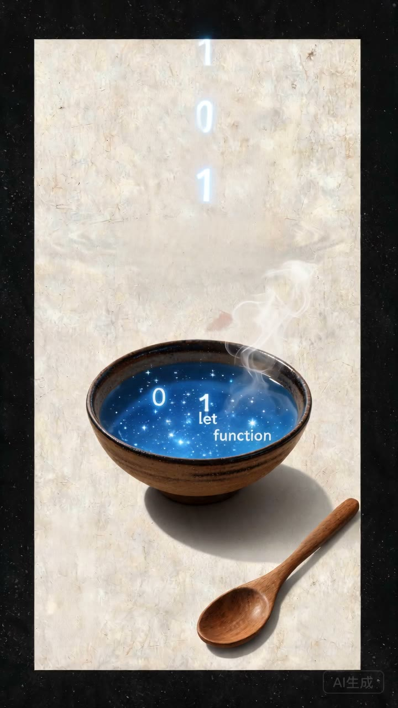
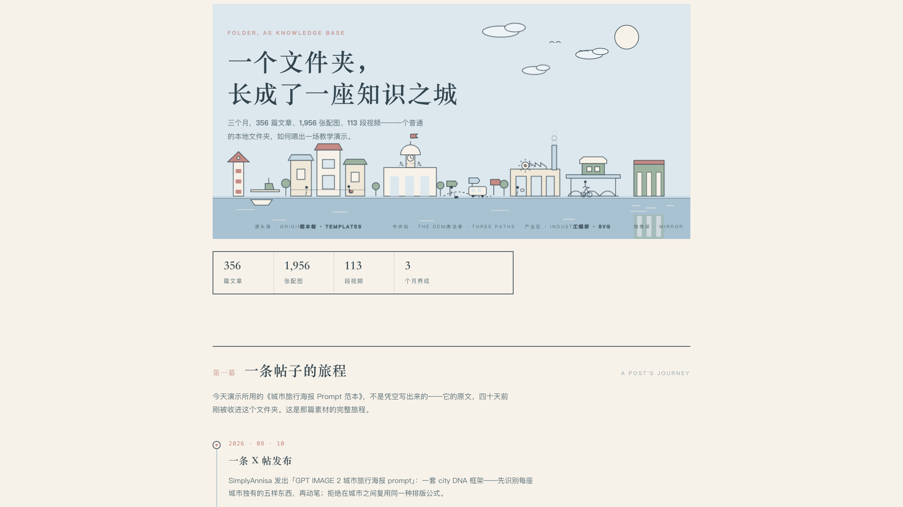
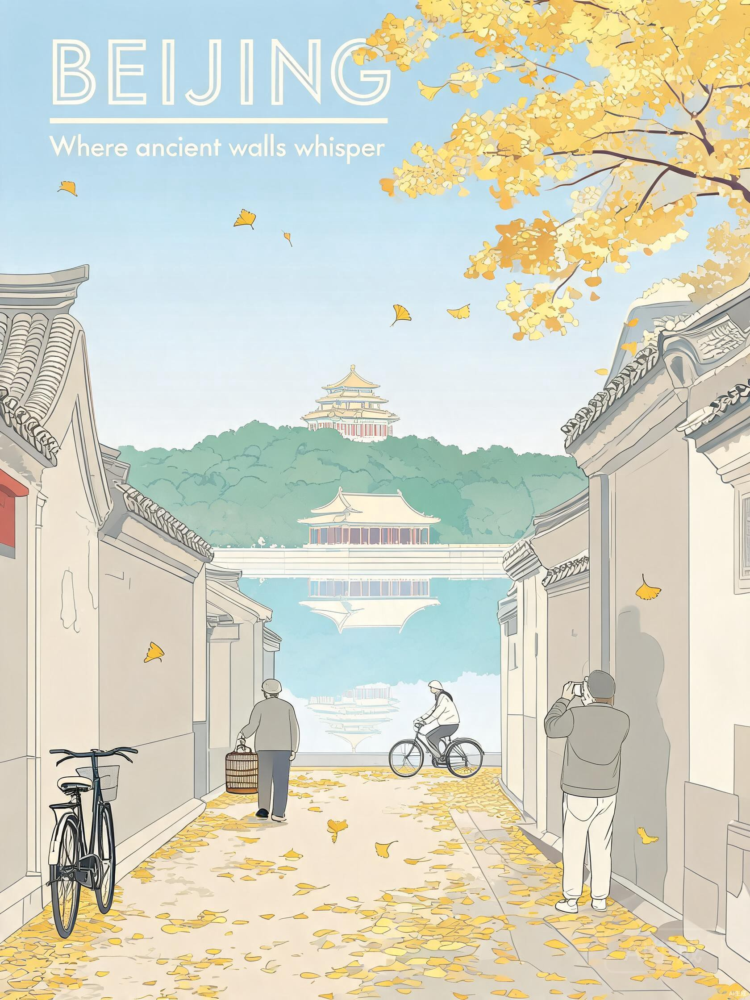
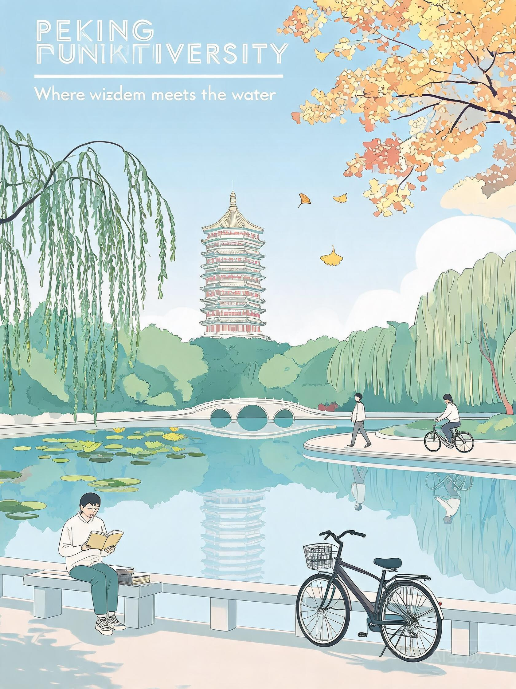
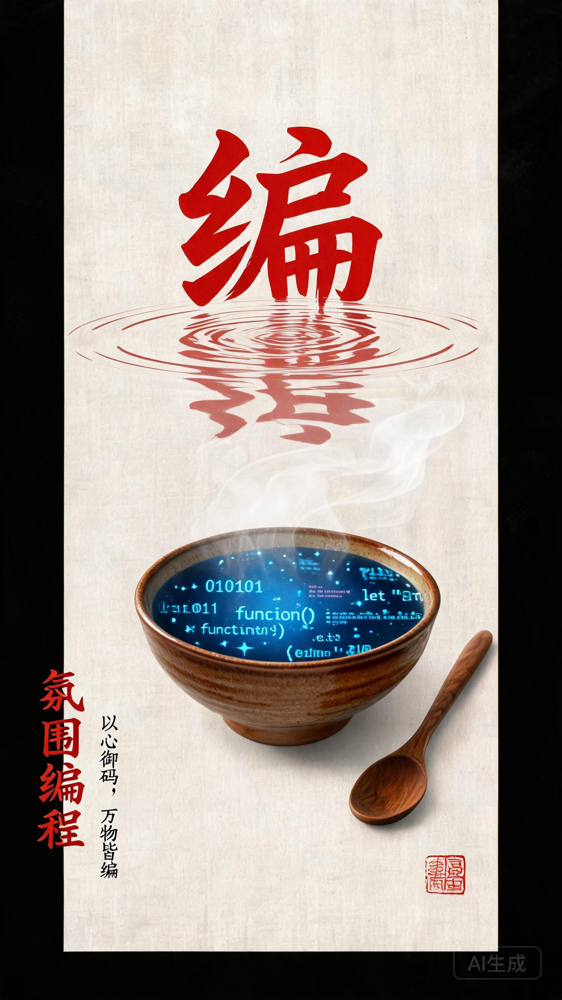
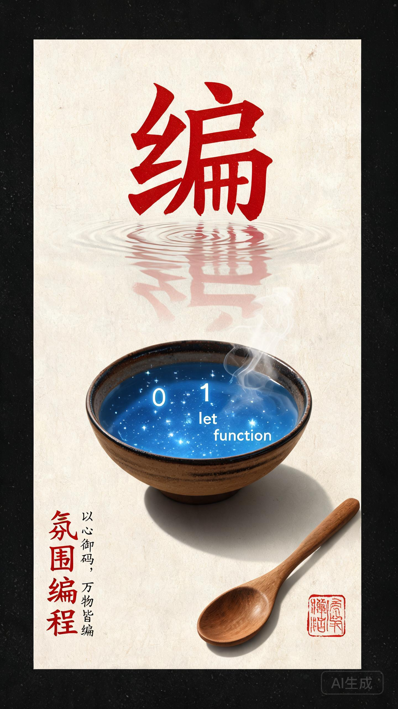
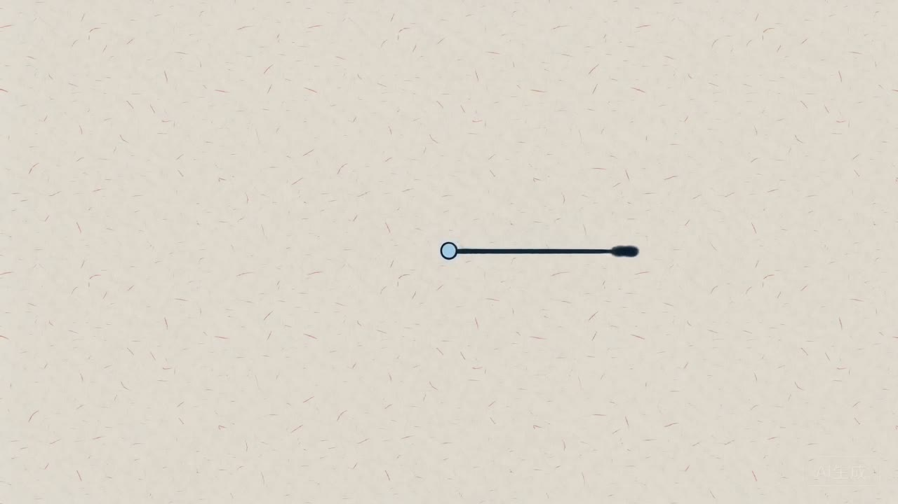
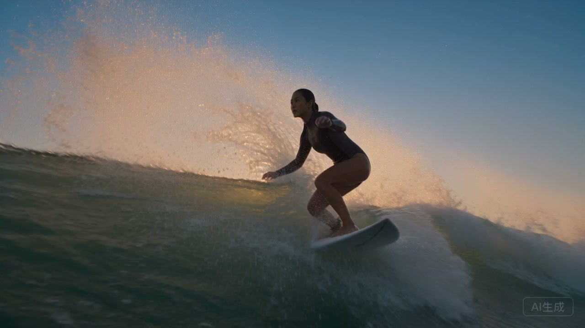
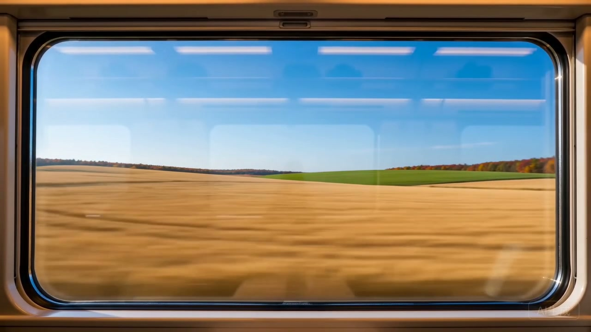
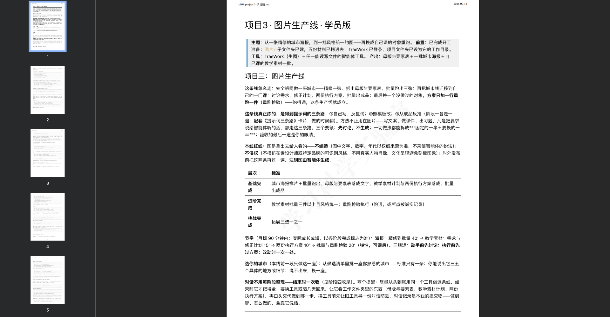

代码汤
登录墙、反爬源，普通工具抓不到；Playwright MCP 让 Claude 自己开浏览器 看页面、点按钮；经验沉淀成 web-article-saver skill，图文视频全量存档， 两个校验脚本把关后才算完成。

素材堆在文件夹里没有价值，可视化让它能「逛」；数字不是手写的， build/scan.py 扫文件夹自动注入——素材变了重跑一次，页面自己更新。 这个页面本身，就是下一幕要讲的方法做出来的。

母版固定、数据自动注入——页面也是生产线生产出来的。
一次只改一处，改一处看一次。
先拆「固定的一半 / 要换的一半」，再照着换。
反推稿与真范本的差距，就是新知。
三条路连着走：反推学写法 → 攒成模板 → 以后照着改。




50 张不是 50 次灵感，是固定框架乘五维变量的排列—— 生产线思维从「一张海报」升级到「一个系列」。
百部短视频方案已列好——固定框架，逐项代入，视频与海报走同一条生产线。




生产线最终装进课程：任务书（学员版带水印）+ 五件配套材料， 学员拿到即开工；教师版材料单独存放。这两天所有产出， 最后都变成了可以交给别人的东西。

| 形态 | 件数 | 代表文件 |
|---|---|---|
| Markdown 方法卡 · 规划 | 12 | 展示方案、50 张规划、提示词三条路 |
| HTML 交互页面 | 5 | 知识之城地铁图、模板画廊 |
| 静态图片 JPG · PNG | 15+ | 海报 v1/v2、悟字海报、封面帧×7 |
| SVG 矢量长图 | 1 | Playwright MCP 长图（墨织风） |
| MP4 视频 | 10 | 代码汤、知识之城成网、敦煌飞天 |
| PDF 任务书 | 1 | 任务书_图片生产线.pdf（学员版） |
| ZIP 打包 | 2 | web-article-saver skill 包、知识库可视化包 |
| Python 脚本 | 1 | 知识之城 scan.py（数据自动注入） |
| PPTX 演示文稿 | 11 页 | 两日总结 · 独立志 zine |